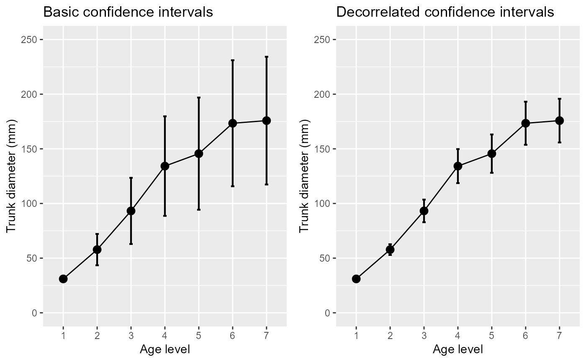

R/superbToWide.R
superbToWide.RdThe function suberbToWide() is an extension to Navarro's WideToLong function
with ample checks to make sure all is legit, so that the data
is suitably organized for suberb. See (Cousineau et al. 2021)
for more.
Other techniques are available to transform long to wide, but many asked for
it within superb.
superbToWide(
data,
id = NULL,
BSFactors = NULL,
WSFactors = NULL,
variable = NULL
)Dataframe in long format
A column with unique identifiers per subject
The name(s) of the between-subject factor(s) as string(s)
The name(s) of the within-subject factor(s) as string(s)
The dependent variable as string
A wide-format data frame ready for superbPlot() or superbData(). All other variables will be erased.
Cousineau D, Goulet M, Harding B (2021). “Summary plots with adjusted error bars: The superb framework with an implementation in R.” Advances in Methods and Practices in Psychological Science, 4, 1--18. doi:10.1177/25152459211035109 .
library(ggplot2)
library(gridExtra)
# Example using the built-in dataframe Orange.
data(Orange)
superbToWide(Orange, id = "Tree", WSFactors = c("age"), variable = "circumference")
#> Tree circumference.118 circumference.484 circumference.664 circumference.1004
#> 1 3 30 51 75 108
#> 2 1 30 58 87 115
#> 3 5 30 49 81 125
#> 4 2 33 69 111 156
#> 5 4 32 62 112 167
#> circumference.1231 circumference.1372 circumference.1582
#> 1 115 139 140
#> 2 120 142 145
#> 3 142 174 177
#> 4 172 203 203
#> 5 179 209 214
# Optional: change column names to shorten "circumference" to "DV"
names(Orange) <- c("Tree","age","DV")
# turn the data into a wide format
Orange.wide <- superbToWide(Orange, id = "Tree", WSFactors = c("age"), variable = "DV")
# Makes the plots two different way:
p1=superbPlot( Orange.wide, WSFactors = "age(7)",
variables = c("DV.118","DV.484","DV.664","DV.1004","DV.1231","DV.1372","DV.1582"),
adjustments = list(purpose = "difference", decorrelation = "none")
) +
xlab("Age level") + ylab("Trunk diameter (mm)") +
coord_cartesian( ylim = c(0,250) ) + labs(title="Basic confidence intervals")
p2=superbPlot( Orange.wide, WSFactors = "age(7)",
variables = c("DV.118","DV.484","DV.664","DV.1004","DV.1231","DV.1372","DV.1582"),
adjustments = list(purpose = "difference", decorrelation = "CA")
) +
xlab("Age level") + ylab("Trunk diameter (mm)") +
coord_cartesian( ylim = c(0,250) ) + labs(title="Decorrelated confidence intervals")
grid.arrange(p1,p2,ncol=2)

# Note that with superb(), there is no need to reformat
# into a wide format anymore:
superb( DV ~ age | Tree, Orange )